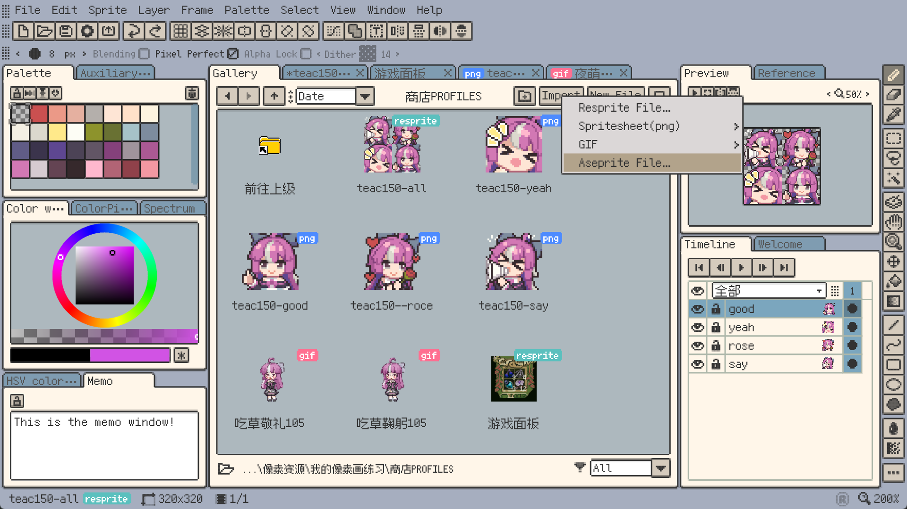
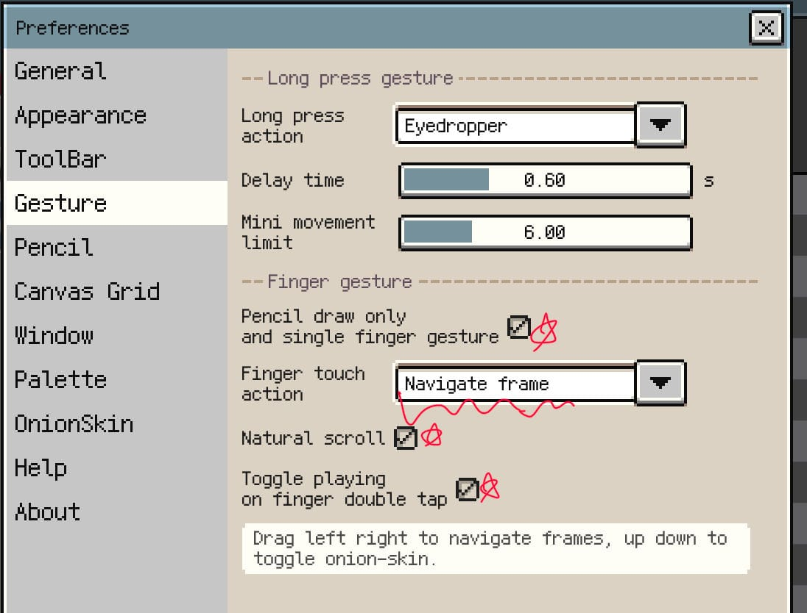

Resprite 深度盘点：一款能跑在手机上的完整像素画工作台
从桌面到移动端全平台覆盖的像素画创作工具，盘点它在绘制精修、调色板管理、渐变抖动、触控优化四个维度的能力边界，以及哪些场景下它比 Aseprite 更顺手。
Resprite 是近些年来在像素画圈子里悄悄火起来的一款工具，官网上能找到它的完整功能说明和版本更新日志。和 Aseprite、Piskel 这些老牌选手相比，它最突出的标签是——全平台：Windows、macOS、iOS、Android 一个不少，官方下载页面可以直接获取各平台安装包，而且移动端不是"简化版"那种凑数，是真把完整的工作流搬到了触控屏上。这让它在"出门在外突然想画两帧"这种场景下，天然有竞争力。
但"全平台"只是入场券。一款像素画工具能不能留得住人，核心还是看它的能力面够不够覆盖从草稿到导出的全过程。下面就从绘制精修、渐变抖动、调色板、移动触控这四个维度，把 Resprite 能做什么、亮点在哪、有什么局限，系统性地过一遍。
能力域一：核心绘制与精修——从局部微调的效率说起
画完主体发现颜色不对、想给角色加一圈描边、或者需要把帧动画里所有帧的头发同时调亮——这些需求如果全靠重画一遍，成本太高。Resprite 在"编辑 / 滤镜"菜单下集中了一整套精修工具，核心思路是选区驱动 + 批量适用。
HSV 调整是这套工具的基础：色相整体变色、饱和度调灰调艳、明度控制亮暗，都可以只对选区生效。比如你想让角色的头发从深棕变成暗红，不用重画每一根发丝——用魔棒或套索选中头发区域，色相拉个三十度就完事了。亮度 / 对比度与明度曲线略有差异，可以配合使用做更精细的微调。
颜色替换工具在像素画里的价值比普通绘图软件大得多。像素画里经常出现"把所有红色改成蓝色"这种批量需求，魔棒 + 填充要逐块点，而 Resprite 的全局颜色替换是按色值精确匹配的——指定"从 #FF0000 换成 #0000FF"，一键扫完整张图或当前选区。更进一步，如果已经有了新的调色板，可以直接让它按新调色板映射替换现有颜色，叫调色板量化。
轮廓工具（Stroke Outline）是另一个实用功能。给选区加描边，宽度从 1 到 4 像素，位置可以是内描、外描或居中。做按钮边框、UI 元素的阴影轮廓、角色的黑色外描边，都比手动画一圈效率高得多。
批量处理是这套工具的终极形态。一个角色有 8 个动作帧？把所有帧的同一区域选中，一次 HSV 调整同时应用到所有帧。一个瓦片图层有 20 个瓦片？选中整批，一次颜色替换。Resprite 在 v1.32.1 之后加入了时间轴批量变换和选区批量编辑，让这种跨帧操作的成本降得很低。更多参数组合和进阶用法的细节，可以去resprite文档里查。

能力域二：渐变与抖动——有限色板里的平滑过渡
像素画的天然约束是调色板小——16 色、24 色、32 色很常见。怎么在有限色板里做出"看起来有更多层次"的过渡效果？Resprite 在这个问题上的处理，比同类型软件要完整。
渐变工具本身没什么惊喜：线性、径向、对角线方向，步数可以限制（比如 16 级，与调色板对齐），可以与画布对齐、与选区对齐或自定义方向。亮点在抖动（Dithering）。
抖动的原理是在两种颜色之间交错排列像素，用有限的两种颜色在视觉上呈现中间色的过渡效果。Resprite 提供了四种抖动模式：有序抖动（按固定矩阵交错，复古游戏风格常用）、Floyd-Steinberg 误差扩散（边缘更柔和，通用过渡）、随机抖动（像素位置随机，更粗糙但自然）、Bayer 抖动（经典 NES 风格）。配合调色板锁定使用——先用索引色模式把颜色范围锁死在项目调色板里，再做渐变或滤镜过渡，Resprite 会自动从调色板里选最接近的颜色来实现过渡。
抖动 + Alpha Lock 同时开启，对已有形状（比如圆形太阳）从中心向外做径向抖动渐变，效果特别好。
这个能力域的真正价值，是让"小调色板"不再是"颜色少"的代名词，而是一种风格选择——NES 54 色、Game Boy 4 色灰阶、Pico-8 16 色，这些预设调色板 Resprite 内置了全套，加载就能用，也可以在它们基础上增删后另存为自己的预设。
能力域三：调色板工作流——从采样到插值的完整链路
调色板是像素画项目的"宪法"，Resprite 在这块花了不少心思。整个工作流覆盖了采样 → 插值 → 预设 → 批量操作 → 导出交换的完整链路。
采样功能解决的是"怎么快速得到一套初始色板"。菜单里点"从当前图层采样"，Resprite 扫描画布上的颜色，按频率取 Top N，自动生成调色板。找了一张参考图想提取它的色板？直接打开参考图采样就行。Resprite 还支持参考图窗口——一边看参考一边生成调色板，分屏对照。
插值功能解决的是"怎么扩充色板"。横向插值：选中调色板里左右两个色块，插入 N 个均匀渐变的中间色。纵向插值同理，适合"色相 × 明度"矩阵排列的调色板。典型用法：画灰度渐变就放白和黑纵向插值，做蓝色渐变就深蓝浅蓝横向插值，快速把 8 色调色板扩充到 32 色——每两个相邻色之间插值一次。
桌面端和移动端在批量操作上有差异。桌面端支持 Ctrl/Cmd 多选、Shift 连续选区，可以批量删除、批量移动、跨不相邻色块批量插值。iOS 端多选靠长按进入多选模式后逐个点选，效率略低但手势设计也算顺手。
导出兼容性做得不错：调色板可以存成 .gpl（GIMP / Krita 通用）或 .rpl（Resprite 专用）。GPL 格式意味着 Resprite、GIMP、Krita、Aseprite 之间调色板直接互传，不会因为换工具而丢掉项目的色板规范。
能力域四：移动触控优化——手不离画布的工作流
这是 Resprite 在同类型软件里最有差异化的一块。Aseprite 目前只在桌面端，Piskel 是网页端为主，而 Resprite 真的把像素画工作流搬到了 iOS / Android 平板上。
手势体系的核心目标是手不离画布。iPad 上的黄金工作流大概是这样：Apple Pencil 持续绘制不抬起，想看看上一帧？单指左滑一下就过去了。回到当前帧？右滑。想切填充工具？Pencil 长按画布 0.5 秒弹出径向菜单，环形菜单围绕当前 Pencil 位置排列，视线还在画布上，手指就能选工具。双指捏合缩放看整体效果。切回铅笔？再长按径向菜单。整个过程 Pencil 几乎不离画布，手指只是做辅助界面操作。
径向菜单是 iOS 端独有的设计（桌面端有键盘快捷键不需要），可以自定义菜单项——切换工具、调笔刷大小、洋葱皮开关、撤销重做、取色、快速复制当前帧、切换颜色前进后退，按需挑几个放进去。
时间轴手势同样值得一提。开启"单指导航帧模式"后，画布上直接做时间轴操作：单指左右拖切换帧，单指上下拖切换洋葱皮层数，双击画布切换播放 / 暂停。画到第 5 帧想对照第 4 帧看看，抬手写去点时间轴面板？不存在的。
其他细节：长按 Pencil 或长按手指取色，双指单击撤销（iOS 可配置），三指单击重做，下拉隐藏所有面板进入专注模式。这些小设计叠加起来，让 Resprite 的移动端体验不像"桌面端缩水"，而是"触控屏原生"。

短板也要说
Resprite 不是没有局限。时间轴批量变换虽然 v1.32.1 就加入了，但跨帧的复制粘贴、帧间图层同步这些高级动画能力，相比 Aseprite 还是偏基础。Aseprite 的动画帧管理、图层命名与组织、切片导出（Spritesheet）的精细控制，目前仍是行业标杆。
桌面端的快捷键体系虽然够用，但不像 Aseprite 那样可以深度自定义——对已经形成肌肉记忆的 Aseprite 用户来说，切换过来需要一段时间适应。iOS 端的多选效率确实不如桌面键鼠，跨色块批量插值这种操作在平板上还是慢半拍。
文件兼容性上，Resprite 能导出 GIF、APNG、视频，但 PSD 导入目前是只读预览性质，不能直接编辑图层——如果你需要和 Photoshop 工作流对接，这块还不够成熟。
什么样的人该用它
通勤路上也想画两帧的独立开发者 / 动画师：这是 Resprite 的核心受众。桌面端做主力，iPad 上画帧间隙的小稿或修修补补，文件同步之后接着在桌面端收尾。没有哪个像素画工具能在全平台覆盖这件事上做得这么完整。
被调色板折腾够了的复古风格爱好者：NES、Game Boy、Pico-8 预设一键加载，采样 + 插值 + 抖动的完整链路，让"在小调色板里做出层次"这件事从玄学变成了标准操作。如果你喜欢复古像素风但又不想被色板卡死，Resprite 值得试试。
想快速上手又不想被复杂工作流劝退的新手：界面逻辑直观，桌面端和移动端都有对应的新手引导，工具面板按功能域分组，不像 Aseprite 一打开满屏都是快捷键提示。从画第一笔到导出第一张 spritesheet，学习曲线比较平缓。
这套资料在 GitHub、Gitee、GitCode 三个平台的仓库里都能拿到——国内访问 Gitee 和 GitCode 更顺畅，也方便和社区里其他像素画爱好者交流修改建议。